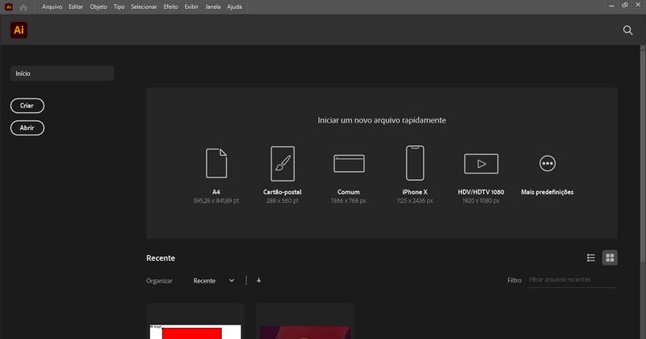
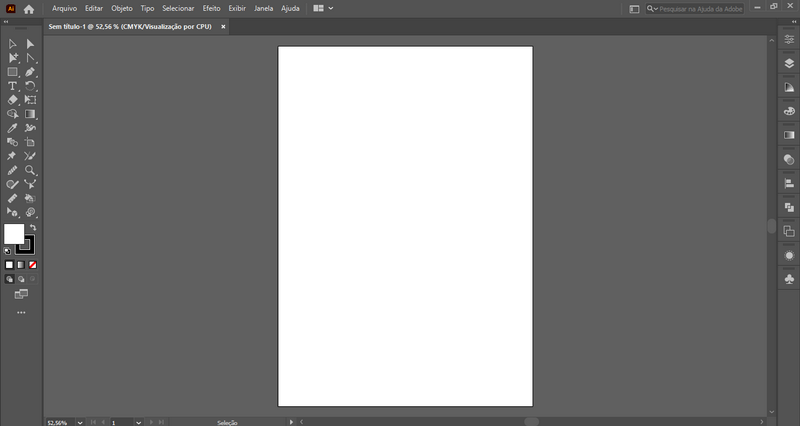

O Adobe Illustrator é uma das grandes alternativas comerciais ao Inkscape e é usado largamente em gráficas e agências de comunicação visual, utiliza o formato .ai e oferece inúmeros recursos de criação e edição vetorial.
Tela inicial do Illustrator:
O Illustrator pertence ao pacote Creative Cloud da empresa norteamericana Adobe e é um dos mais populares no mundo.
Ao abrir o Illustrator você encontrará uma tela inicial utilizada para configurar o documento com o qual trabalhará. Lembrando como dissemos no início, que a configuração de um documento pode ser baseada em pixels caso formos trabalhar em uma arte para web, ou em metros, centímetros ou milímetros, caso nosso trabalho for para impressão.
Após criar um arquivo, teremos à nossa disposição a Área de Trabalho, onde, como você pode verificar na imagem abaixo, encontraremos os elementos necessários para o trabalhar.
Área de Trabalho:
Ao lado esquerdo, temos a Barra de Ferramentas, onde estão as ferramentas de criação e de modificação que usaremos para desenhar, abaixo da barra de ferramentas você encontra os controles de cor de preenchimento e contorno.
Do lado direito da tela, você encontrará as janelas de encaixe que dão acesso rápido às funções mais utilizadas. Essas janelas de encaixe podem ser personalizadas de acordo com sua necessidade.
As janelas de encaixe utilizadas com mais frequência no Illustrator e que podem ser encaixadas na lateral direita, costumam ser as janelas de Propriedades, Camadas, Cor, Gradiente, Transparência, Alinhar, PathFinder (Operações booleanas) e Aparência. Você pode ativar uma ou mais dessas janelas e várias outras pelo menu Janela.
No Illustrator, você pode alterar o modo de cor de seu desenho facilmente clicando no menu → Arquivo → Modo de cor do documento → CMYK/RGB. Em artes para web você deve dar preferência ao modo RGB pois possibilita cores mais vivas, para tal você deve configurá-lo ao criar o documento, em artes para impressão em mídia física você pode usar RGB ou CMYK e informar à gráfica o modo que utilizou (verifique se eles não exigem um modo específico, geralmente gráficas grandes aceitam apenas artes em RGB). Na dúvida, use sempre RGB.
No Illustrator, as ferramentas de formas básicas costumam estar agrupadas num único conjunto na barra de ferramentas que apresentará como ícone a última ferramenta utilizada.
Diferentemente de outros softwares, o Illustrator trata formas básicas e curvas da mesma maneira. Você pode desenhar uma forma básica e alterar seus vértices com a ferramenta de seleção direta da mesma maneira que faria com uma forma criada com uma caneta bézier.
A edição de vértices do Illustrator tende a ser um pouco mais difícil que no CorelDraw e no Inkscape, você precisa utilizar uma combinação das ferramentas Seleção Direta, Ponto de Ancoragem e Caneta, ou utilizar as ferramentas especiais Adicionar Ponto de Ancoragem, Excluir Ponto de Ancoragem, Curvatura e Ponto de Ancoragem.
As propriedades de preenchimento e contorno no Illustrator são aplicadas utilizando os controles Preenchimento e Traçado na parte inferior da Barra de Ferramentas. Você pode ainda personalizar essas propriedades através das janelas de encaixe Cor, Transparência e Gradiente, ou através da sessão Aparência na janela de Propriedades.
Para arranjar e alinhar objetos no Illustrator podemos utilizar a janela de encaixe Propriedades, no entanto, você pode ativar ainda a janela de encaixe Alinhar, para ter acesso rápido a essas opções. Para alinhar objetos, tanto na janela Alinhar quanto na janela de Propriedades no conjunto Alinhar, temos as opções de centralizar os objetos verticalmente, horizontalmente, ou alinhar ao topo, à base, à direita e à esquerda. Quando mais de um objeto está selecionado, o alinhamento é feito em relação aos objetos, quando apenas um objeto está selecionado o alinhamento é feito em relação à página (chamada no Illustrator de prancheta). Quanto ao arranjo, é feito no conjunto Organizar, na janela de Propriedades, onde temos a opção de fazer os objetos avançarem acima ou recuarem abaixo, ou serem enviados para trás ou para frente de todos os objetos.
No Illustrator as operações booleanas são efetuadas com a ferramenta Pathfinder e há algumas opções a mais em relação a outros softwares que podem confundir alguns iniciantes no Illustrator, as principais, subtração, união e interseção são as primeiras opções, no caso da subtração a ferramenta é chamada de Menos frente.
O gerenciador de camadas do Illustrator, como em outros softwares da Adobe é um dos mais completos dos softwares de edição vetorial, com a opção de subcamadas, ou seja, camadas dependentes de outras camadas, e de criar máscaras de recorte, que funcionam semelhante a clipagem. Além das opções comuns de nomear, bloquear e ocultar camadas de forma independente. Alguns outros softwares da Adobe como o Photoshop ainda possuem a opção de agrupar camadas em pastas e gerenciar opacidade, talvez, quando você estiver lendo esta apostila essas opções já estejam inseridas no Illustrator em versões mais recentes.
Mencionada anteriormente, a clipagem no Illustrator pode ser feita de forma bem simples, por meio da Máscara de Recorte, que pode ser feita clicando com o botão direito do mouse com os objetos selecionados e escolhendo a opção Criar máscara de recorte, nesse caso, o objeto de baixo será inserido no objeto de cima. Ou pode ser feita ainda uma aparagem, por meio de uma camada marcada como Máscara de Aparagem. Na máscara de aparagem os objetos de baixo são inseridos nos objetos de cima, no entanto a edição de cada um ainda é livre e pode ser feita de forma independente. O Illustrator, assim como o CorelDraw, permite entrar em um clip para editar o conteúdo, no entanto apenas permite a visualização do recorte e não de todo o conteúdo do clip.
Assim como no Inkscape, o controle de transparência dos objetos no Illustrator é feito pelo valor da opacidade, e as opções de Mesclagem e Opacidade estão presentes tanto na janela de Propriedades, nas opções de Aparência, quanto na janela de Transparência. O Illustrator tem as principais opções de mesclagem de cores. Procure utilizar o modo RGB ao aplicar mesclagem de cores, pois a mesclagem de cores do Illustrator não alcança níveis altos de contraste no modo CMYK.
Brilho e sombra no Illustrator são aplicados como efeitos, o Illustrator tem uma janela especialmente para controle dos efeitos aplicados a um objeto que é a janela Aparência, nela você pode controlar a ordem como eles são aplicados, excluir ou ocultar cada um deles, além de aplicar novos efeitos. Você pode aplicar efeitos ainda utilizando o próprio menu Efeitos, onde encontrará uma lista completa com todas as opções disponíveis.
Os efeitos de brilho e sombra estão presentas no conjunto Estilizar, você pode aplicar brilhos internos e externos e sombras projetadas, para aplicar sombras internas, basta aplicar um brilho com uma cor escura. Ao aplicar efeitos, procure utilizar o modo RGB, pois os efeitos do Illustrator costumam não ter uma compatibilidade muito boa com o modo CMYK, principalmente em cores escuras.
Caso queira conhecer mais sobre o Illustrator mais a frente você encontrará um tutorial onde aprenderemos a utilizar mais a fundo os recursos e ferramentas essenciais para desenho vetorial neste software.